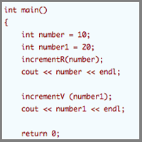
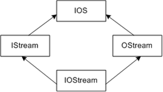

Lesson 3
 Functions, Source Files, and Programs
Key Terms
- class
- instance
- encapsulation
- polymorphism
- data hiding
- signature
- function prototype
- field
Introduction to Objects
You're taking this course to learn to program. In particular, you're interested in learning to program in C++. What does this really mean? To answer this question, we need to understand several things. Learning to program in C++ is more than simply writing programs using the C++ language. What we're going to be doing is learning how to solve problems using the C++ language and the object paradigm. So what does all that mean?
Programming is taking a problem such as "Find the area of a rectangle a set of data, in this case the length and width of the rectangle, and a set of functions, such as area = length * width and then applying functions to the data to get an answer. In a procedural approach to programming, the area() function would take the length and width as input parameters, and return the area as a result.
In C++, we seek to abstract the world, and group data and functions together. The object-centered paradigm encapsulates data and functions in objects. Objects are abstractions; they represent real-world entities such as numbers, character strings, structures, vehicles, and fruits. As we can see, they are usually nouns. In general, objects that share common properties or attributes (adjectives or adverbs) are called classes. We have the class Vehicles or the class Stores. In specific, we have particular objects: my car, her store. These are called instances of a class.
Let's look at a Rectangle through object-oriented eyes.
- Rectangle
-
data—encapsulated
- width
- length
- function (called a method or member function)—encapsulated
- area = length * width
-
data—encapsulated
In an object-oriented program, we have an instance of the class Rectangle. We've been asked to find the area. As we did with the procedural program, we state the problem in a natural language; here, it's English:
It's important to note that we don't care how area is determined. It could be by algorithm, lottery, or guess, for that matter. In C++, rather than writing a procedure, we define a class. The class encapsulates the knowledge necessary to answer the question, which in this case is "What is the area of the rectangle?" This is our first look at the major difference between procedural and object-centered thinking. Our class now looks like this:
If we wish to find the area of the rectangle, we send a request to the object instance. The request is a message telling the rectangle to return its area. In C++ we send a message to a particular object by calling a member function of the object.
class Rectangle
{
public:
// Constructor to initialize the class data
Rectangle() { length = 10; width = 22;}
// Encapsulated member function to compute the
area unsigned int getArea() { return length * width;}
private:
// The encapsulated data
unsigned int length;
unsigned int width;
};
The exact meaning of some of the key words and functions isn't important right now. We're simply showing the structure of the class. (If you know C, and you notice a lot of similarity between the C++ class and the C struct, you're right.) They're almost identical. We'll discuss the differences shortly.
Here we have one particular class of rectangle, one with a fixed area of 220 units. We will see shortly how to make a more general class. In C++, we create an instance of our class by declaring
Rectangle aRectangle;
We can request the rectangle's area by writing.
aRectangle.getArea();
and aRectangle will return the answer. Note once again that there are many ways of computing the area; the requester will not know which is used. Observe, the class Rectangle has encapsulated data (width and length) andfunction (area() = length * width).
In this case, the class is Rectangle, the instance is aRectangle. A message is being retrieve the area of the rectangle by calling the getArea() member function.
Definitions
Now that we've come this far, we ask, "what is object-oriented programming?" Let's begin with what it's not. It's not programming with objects, programming with an object-oriented language, or moving objects around on a screen with a mouse. (That last one is how a fellow I interviewed once explained it.) Object-oriented programming must meet four fundamental criteria:
- It must support abstraction. This is the ability to focus on essential details while ignoring non-essential ones.
- It must support abstract data types. An ADT is a model. It encompasses a type (int, char, string) and a set of operations. These characterize the behavior of the type.
- It must support inheritance. Inheritance is the ability to derive new objects from old. It makes the language extensible.
- It must support polymorphism. Polymorphism allows different object to respond in different ways to the same message. For example we could have a polymorphic member function named
draw. Ifdrawwas called on arectangleinstance a rectangle would be drawn. If draw was called on acircleinstance, a circle would be draw.
Functions
C++ introduced the concept of function prototypes. Function prototypes were so convenient they then became a part of the ANSI C language. Although the use of function prototypes is optional in C, function prototypes are required in C++. Function prototypes identify for the compiler the functions to be used throughout a program. Each prototype specifies the name of a function, the number and type of its parameters, and its return type. The function's parameter list is called its signature. The prototype is used during compile time to ensure proper invocation of each function. This checking prevents what used to be a common programming mistake in C. That mistake was passing the wrong number or type of parameter to a function.
The syntax for a function prototype is as follows:
returnType functionName (arg0 . . . argn-1);
The function prototype is written exactly as the first line in the definition of the function. Note that it is terminated with a semicolon.
Function Prototype
void aFunction(int, char*, float);
Definition
void aFunction(int anInt, char* aCharPtr, float aFloat)
{
. . .
}
Notice that parameter names are not necessary in the prototype. Good style, however, suggests using them. We prefer
void myFunction(int first, char* second, float third);
Default Parameters
C++ extends function prototypes by permitting parameters to be assigned default values. Starting from the right and moving to the left, in sequence, you can provide each parameter with a default value, which will then be used if the function is invoked with fewer parameters than specified in the prototype.
returnType functionName (type0 arg0=value0 . . . typen argn=valuen);
When the function is called, the compiler first matches the function name against the prototype. Then, starting from the left, it binds each argument to the value given in the user's call. If fewer than the specified number of parameters are used, the remainder are bound to the default values in the prototype. Here are a couple of examples:
void myFunction (int earth, int moon = 10, int stars = 20); // Legal aFunction (5, 10); // Illegal aFunction (5, ,30); // Illegal myFunction (,15,);
Here's another exmaple.
//
// C to C++ - Functions - Using Default Parameters 3.0 *
// In the function printThings(), the second and
// third parameters have been assigned default values.
//
#include <iostream>
using namespace std;
void printThings(int earth, int moon = 1, int stars = 2);
int main(void)
{
printThings(10); // Prints 10 1 2
printThings(10,20); // Prints 10 20 2
printThings(10, 20, 30); // Prints 10 20 30
return 0;
}
void printThings (int earth, int moon, int stars)
{
std::cout << earth << " " << moon << " " << stars << endl;
}
Reference types as function parameters
Reference types can be used as parameters in a function call. In fact, this is one of their primary uses. When we call a function, we pass parameters in two ways. We can pass the value of the parameter (pass-by-value), which requires making a copy, or we can pass the address of the actual object (pass-by-reference).
When using pass-by-value, the function never accesses the actual arguments. It manipulates a local copy that has been stored on the stack. Any changes made to the local copies do not affect the actual arguments. Such behavior is not always suitable. For example, when large objects are passed or when the arguments must be modified. Under these circumstances, we prefer to use pass-by-reference. Now, the function accesses the actual arguments. In C we pass by reference using pointer variables. In C++ we more often use references. References have the advantage that they must be initialized (no more worrying about whether someone has passed our function a NULL pointer). We can also avoid the ugly pointer syntax in the function body.
Using a reference type, the address of the argument is passed rather than a copy of the value. If the argument is not to be changed, we use the const specifier. The function call prototype becomes
void myFunction(const int& x);
and the invocation is
int x = 10; myFunction(x);
The ampersand (&) tells the compiler to treat the variable as a reference. This means the address of the variable is passed to the function. than invoking the copy mechanism. Let's look at a few examples:
Example 4.7
// C to C++ Reference Types
// Pass-by-Reference using Reference Types
//
#include <iostream>
using namespace std;
void incrementR(int&number);
void incrementV(int number);
int main()
{
int number = 10;
int number1 = 20;
incrementR(number);
cout << number << endl; // Will print 11
incrementV (number1);
cout << number1 << endl; // Will print 20
return 0;
}
void incrementR(int& aNumber)
{
aNumber++; // Passed by reference
}
void incrementV(int aNumber)
{
aNumber++; // Passed by value
}
Example 4.8
// C to C++ - Reference Types - A Reference to a Pointer
//
#include <iostream>
using namespace std;
// We cannot have a pointer to a reference,
// but we can have a reference to a pointer
void increment (int* &i) {i++;}
int main()
{
int* iPtr = 0;
cout << "iPtr = " << iPtr << endl; // Prints 0x00000000
increment (iPtr);
cout << "iPtr = " << iPtr << endl; // Prints 0x00000002
return 0;
}
Example 4.9
#include <iostream>
//
// One cannot define pointers to references and
// consequently to arrays of references. The latter
// is true since int & v[ ] will implicitly create
// a pointer to a reference: v[1] -> *(v+1) thus a
// pointer to a reference.
//
// If the reference refers to a const, (const int&
// myRef=10), a temporary object is created and
// initialized to 10. The reference becomes a name
// for that object.
//
// In this example, if one tries to use number as
// the reference, a temporary would be created
// since an array is implicitly a const.
//
void get(char*& number);
int main()
{
char number[5];
char *numPtr = number;
get(numPtr);
cout << number << endl;
// note if we don't provide a return from main, then
// main implicitly returns 0. main is the only function
// in C++ that does this.
}
void get(char* &number)
{
cout << "Enter a number" << endl;
cin >> number;
}
Overloading Function Names
In C++, functions can use the same names, within the same scope, if each can be distinguished by its name and signature. The signature specifies the number and type of the parameters expressed as a comma-separated list of argument types. The combination of name plus signature, then, uniquely identifies a function. When a function is declared more than once, the compiler interprets subsequent declarations as one of the following:
- a redeclaration, if return type and signatures match Note that the argument names are irrelevant, and may be omitted.
extern void print (int a, int b); void print (int c, int d);
- an erroneous redeclaration, if signatures match and return types differ This is a compile-time error. The return type is not considered when distinguishing between overloaded functions.
char print(int a, int b); void print(int c, int d);
- overloaded, if signatures differ (that is, the number, type, or order of arguments differ)
In Example below we overload the function name printThings to accept three different types of argument: an int, a char, and a pointer to a char.
//
// C to C++ - Functions - Overloading Function Names 3.1
// Functions names can be overloaded if each can
// be distinguished by its signature
//
#include <iostream>
#include <string>
using namespace std;
void printThings(int i);
void printThings(char c);
void printThings(char *s);
int main(void)
{
char *s = "This is a string";
printThings (10); // Print an int
printThings('a'); // Print a char
printThings (s); // Print a string
return 0;
}
void printThings (int i)
{
cout << "integer: \t" << i << endl;
}
void printThings (char c)
{
cout << "character: \t" << c << endl;
}
void printThings (char *s)
{
cout << "string: \t" << s << endl;
}
Note that an overloaded function may have default parameters, as long as the function, both with and without the default arguments, can be identified uniquely.
Lambda functions
TEST(nolambda, lambdas)
{
std::vector testScores{ 89, 98, 45, 67, 66, 22 };
std::stringstream ss;
for (int& i : testScores)
{
ss << i << " ";
}
CHECK_EQUAL("89 98 45 67 66 22 ", ss.str());
}
// A lambda function is an unnamed inline function which can allow access to names in the calling environment.
// A lambda function has three parts
// 1) The lambda introducer which defines whether and how to access names in the calling environment.
// This is enclosed in square brackets [].
// 2) A declaration of the function parameters. These are enclosed in parenthesis ().
// 3) Executable code which define the lambda function body. These are enclosed in curly braces {}.
//
// So each lambda function follows the pattern [introducer](args){body}
TEST(basicLambdaSyntax, lambdas)
{
// func is a variable containing a lambda function.
// The type of func is deduced through use of auto
// The empty lambda introducer does not allow the function to refer to any names in the calling environment.
//
// A single parameter of type std::ostream& is passed.
auto func = [](std::ostream& os)
{
os << "Hello World";
};
std::stringstream ss;
// Call the lambda with a stringstream
func(ss);
// call the lambda with cout
func(std::cout);
// call the lambda with a file argument
std::fstream file("file.txt");
func(file);
CHECK_EQUAL("Hello World", ss.str());
}
// This shows a most common usage of lambda functions. That usage is to define the function used
// by an STL algorithm to operate on each of the elements in a collection. In this case the
// algorithm is std::for_each which simply applies its function to each element.
TEST(loopLambdaCpp11, lambdas)
{
std::vector testScores{ 89, 98, 45, 67, 66, 22 };
std::stringstream ss;
// [] The lambda introducer [&] says to access any names from the calling environment as references.
// () A single int argument is passed to the lambda. This is a particular element from the testScores collection
// {} In the function body the name ss is accessed from the calling environment. Since we used the[&] lambda
// introducer, ss is treated as if it was implicitly passed to the lambda function by reference.
std::for_each(testScores.begin(), testScores.end(), [&](int v)
{
ss << v << " ";
});
CHECK_EQUAL("89 98 45 67 66 22 ", ss.str());
}
Enumeration Types
Enums
An enum is a type that can be set to one out of a set a finite integer values. The integer values are given symbolic names. For example, a color enum might contain the possible values red, green, and blue.
For historical reasons C++ provides two types of enum. The older enum type is a plain enum in which enumerator names are in the same scope as the enum. Here's an example:
enum Color
{
Red,
Green,
Blue
};
TEST(enum, Color)
{
Color c = Red;
}
A consequence of the older enum type is we cannot use the same enum value in different enums. For example
enum Color
{
Red,
Green,
Blue,
};
enum Mood
{
Blue, // won't compile as name collides with Blue from the Color enum
Chuft,
};
TEST(enum, Color)
{
Color c = Red;
}
The newer class enum places each enumerator name within its scope. Thus its enumerator names will not collide with other enumerator names.
enum class Color
{
Red,
Green,
Blue,
};
enum class Mood
{
Blue,
Chuft,
};
TEST(enum, Color)
{
Color c = Color::Blue;
Mood m = Mood::Blue;
}
Prefer enum classes because of the better scope resolution.
Input/Output Stream Operations
In C++ input and output capabilities are provided in the Standard Library. We bring the library in with the include file <iostream>. At the lowest level input and output data in C++ are streams. The iostream library (istream and ostream) provide a rich set of operations and functions for using streams at the byte level as well as providing higher level formatted I/O capabilities.
Figure 3.1 The iostream Class

Input and output stream operations are supported by the classes istream, ifstream, istrstream for input from standard input, files, or strings, and ostream, ofstream, ostrstream for output to standard output, files, or strings. The iostream class, derived from istream and ostream as shown in figure 3.1, allows for bi-directional input and output.
ostream
In C++, an output operation inserts objects into an output stream. The operation is signified by the insertion operator, <<, which is the overloaded left-shift operator. (Operator overloading will be covered in a later lesson.)
istream
In C++, an input operation extracts objects from an input stream. Extraction is signified by the extraction operator, >>, which is the overloaded right-shift operator.
Predefined Stream Objects
C++ has a number of predefined stream objects we can use. Although they may appear to be somewhat different from what we're used to, they have really changed little from what we know in C. The following are the predefined objects:
-
cin: Anistreamclass object that is connected to standard input. -
cout: Anostreamclass object that is connected to standard output. -
cerr: Anistreamclass object that is connected to standard error;cerrprovides unbuffered output. -
clog: An ostream class object that is connected to standard error;clogprovides buffered output.
The predefined names in the Standard C++ Library, such as istream, ostream, cin, and cout are defined in the std namespace. To use them in your programs, you may need to include a statement like the following:
using namespace std;
Let's now look at the basic I/O operations in C++. We'll begin with output.
Output
To send something to standard output, we apply the insertion operator to the ostream class object connected to standard output, which is cout:
cout << stuff;
As in C, certain predefined strings are recognized. These include the familiar \n for a newline and \t for a horizontal tab. In C++, however, we use the keyword endl rather than \n. This keyword provides a predefined operation that flushes the output buffer and inserts a newline into the output stream.
The insertion operator, <<, can accept any of the built-in data types as well as any complex expression that evaluates to a data type. It can also be overloaded to accept user-defined types. We'll see what this means in the next lesson.
//
// C to C++ - iostream 3.0
//
// Using ostream to write to stdout
//
#include <string>
using namespace std;
int main()
{
std::string city("Seattle");
// Insert a string into ostream
cout << "The length of Seattle is: \t";
// Insert an int and a newline (via endl)
cout << city.size() << endl;
// We can also insert all of the objects
// into the ostream in one statement
cout << "The length of Seattle is: \t" << city.size() << endl;
return 0;
}
Input
To read something from standard input, we apply the extraction operator to the istream class object connected to the standard input, which is cin:
cin >> place to put stuff;
The extraction operator, >>, can accept any of the built-in data types or any complex expression that evaluates to such a data type. Like the insertion operator, the extraction operator can be overloaded to accept user-defined types. As with C, white space, blanks, newlines, and tabs separates values on the input stream (with the basic >>). These are not read as characters. If it is necessary to read white space, we must use other member functions.
Here is an example:
//
// C to C++ - iostream 3.1
// Using istream to read from stdin
//
#include <iostream>
#include <string>
using namespace std;
int main()
{
long id;
cout << "Please enter your Social Security Number: " << endl;
// Read the user's input and assign it to the variable id. cin >> id;
cout << "Your Social Security Number is: " << id << endl;
return 0;
}
Here's another:
//
// C to C++ - iostream 3.2
//
// Using istream to read strings from stdin
//
#include <iostream>
#include <string>
using namespace std;
int main()
{
string token;
while (cin >> myBuf)
{
cout << myBuf<< endl;
}
return 0;
}
Notice that if we enter Seattle, our program prints Seattle. If we enter Seattle is in Washington, our program prints
Seattle is in Washington
Notice also that white space is used to delimit the tokens in the input. Once a token is found the separating whitespace is discarded.
Output Formatting
The standard output format is predefined so that basic output can be done easily. There are applications for which a program's output must appear in a different format. The iostream class in C++ offers a rich set of functionality for input and output formatting. Examples of output parameters that may be specified by the user are the width of a display field, the justification of the text (left or right) within the field, and the numeric base and precision.
The state of an iostream class object (cout, for example) is held in several private data members within the object. These members are referred to as fields (for example, basefield for numeric base and adjustfield for justification). The user of an iostream is given the ability to control the format by setting (or unsetting) certain format flags or bits within a named field. We set or retrieve format flags using the setf() member function and unset them using the unsetf() member function.
As an alternate means for controlling formatting, the language also supports what are called manipulators. To use manipulators, we must include <iomanip>.
Precision
We can alter the precision of the output data by using the precision() access function of cout. The member function precision(), with no arguments, returns the current precision:
cout.precision();
When invoked with an argument, precision() sets the precision.
cout.precision(int aPrecision);
In C++, a float normally has six digits, five of which are after the decimal point.
//
// C to C++ - iostream 3.3
//
// Specifying the output precision - will print the
// decimal point and i-1 digits of precision
//
#include <iostream>
#include <string>
#include <iomanip>
using namespace std;
int main()
{
for (int i = 1; i<6; i++)
{
cout.precision(i);
cout << "The precision is: " << cout.precision() << "\t" << 9.87654321 << endl;
}
return 0;
}
//
// Prints:
//
// The precision is: 1 10.
// The precision is: 2 9.9
// The precision is: 3 9.88
// The precision is: 4 9.877
// The precision is: 5 9.8765
//
Let's look at several other examples of things supported by the iostream library.
Output
put (char c)outputs a single character.
cout.put('a');
write(char *s, int n) outputs n characters from the string *s. For example:
char *s = "my name is";
cout.write(s, 6)gives
my nam
Notice that white space counts as a character. We can change the input or output format either by setting (unsetting) the appropriate flag or by using manipulators including the following: oct, dec, hex, scientific, fixed, setprecision(int n). The following changes the output base to hex then octal:
cout.setf(ios::hex, ios::basefield); cout << 256; // prints 100 cout << oct << 80; // prints 120
The change will remain in effect until changed again.
Input
get(char c) inputs a single character.
char a; cin.get(&a); // Enter an 'f' cout << a; // Prints an 'f'
read (char *s, int n) retrieves n contiguous bytes from standard input and copies to s.
getline (char *s, int n) reads up to n characters (or until a newline is encountered) from standard input and copies them to s.
//
// C to C++ - iostream
//
// Output Formatting - Change of Base
// and Case for Numbers
// Character, String, Line Input and Output
//
#include <iostream>
#include <string>
#include <iomanip> using namespace std;
int main()
{
// Set case to upper for numbers
cout.setf(ios::uppercase);
// character out prints a
cout.put('a') << endl;
// string out prints My na
char *s = "My name is";
cout.write (s, 5) << endl;
// change of base prints FD
cout.setf(ios::hex, ios::basefield);
cout << 253 << endl;
// Set case to lower for numbers prints 6d 157
cout.unsetf(ios::uppercase);
cout << 109 << endl;
cout.setf(ios::oct, ios::basefield);
cout << 111 << endl;
// input a character prints input character
char a;
cin.get(a);
cout << a << endl;
// input a string puts 8 bytes of input string
// into buffer b. no '\0'
char b[80];
cin.read(b, 8);
b[8] = NULL;
cout << b << endl;
// input a line puts characters upto
// the delimiter ('|')
// of input line into buffer c. adds '\0'
//
char c[80];
cin.getline(c,80, '|');
cout << c << endl;
return 0;
}
Summary
In this lesson, we have learned several ways in which the C++ language has extended C, including a new library of iostream functions to get data into and out of our programs.
Practice Questions
Test your understanding of the concepts presented in this lesson by working through the following practice questions, then check your answers with Answers to Practice Questions for Lesson 3.
- What is the purpose of a function prototype?
- Can I choose which function parameters have default values?
- Can an overloaded function have default parameters?
- What is the difference between #define and const?